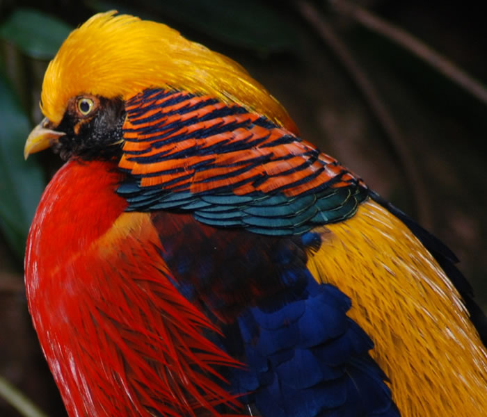
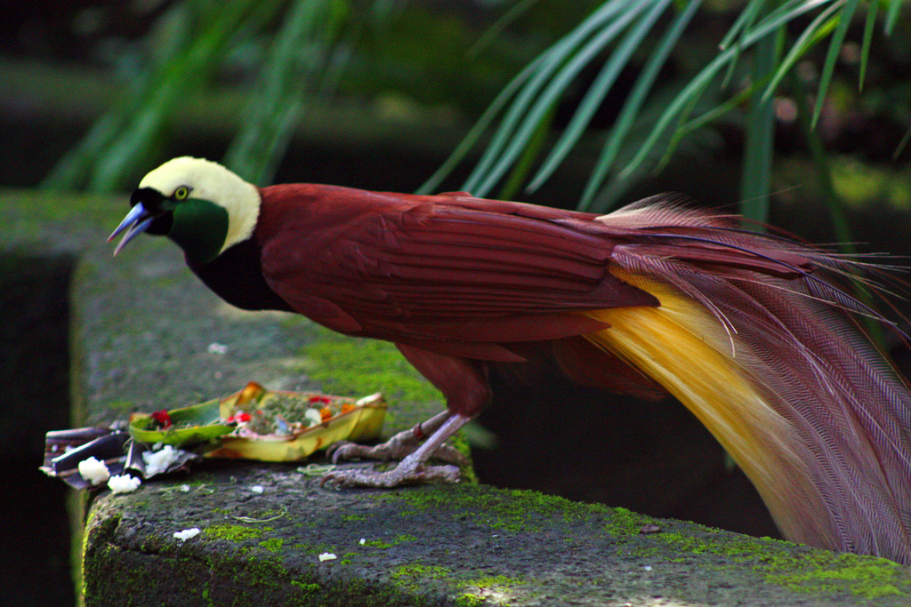

Quetzal are found in forests and woodlands, especially in humid
highlands, with the five species from the genus Pharomachrus being
exclusively Neotropical, while the single Euptilotis species is found
in Mexico and very locally in southern United States
The blackbuck, also known as the Indian antelope, is an antelope found
in Pakistan, India and Nepal. The blackbuck is the sole extant member
of the genus Antilope. The species was described and given its
binomial name by Swedish zoologist Carl Linnaeus in 1758.

The golden pheasant or Chinese pheasant (Chrysolophus pictus) is a
gamebird of the order Galliformes (gallinaceous birds) and the family
Phasianidae (pheasants). It is native to forests in mountainous areas
of western China.

The greater bird-of-paradise (Paradisaea apoda) is a bird-of-paradise
in the genus Paradisaea. The greater bird-of-paradise is the largest
member in the genus Paradisaea, with males measuring up to 43 cm (17
in) (excluding the long twin tail wires). The female is smaller, at
only 35 cm (14 in).
The rainbow lorikeet (Trichoglossus moluccanus) is a species of parrot
found in Australia. It is common along the eastern seaboard, from
northern Queensland to South Australia and Tasmania. Its habitat is
rainforest, coastal bush and woodland areas
The vampire squid is a small, deep-sea cephalopod found throughout the
temperate and tropical oceans of the world. Unique retractile sensory
filaments justify the vampire squid's placement in its own order:
Vampyromorphida.
A genet is a member of the genus Genetta, which consists of 14 to 17
species of small African carnivorans. Genet fossils from the Pliocene
have been found in Morocco. The common genet is the only genet present
in Europe and occurs in the Iberian Peninsula and France.
The lined butterflyfish is a butterflyfish (family Chaetodontidae),
one of the largest species in the genus Chaetodon. They have a wide
range from the Red Sea to South Africa and as far east as southern
Japan and Hawaii.